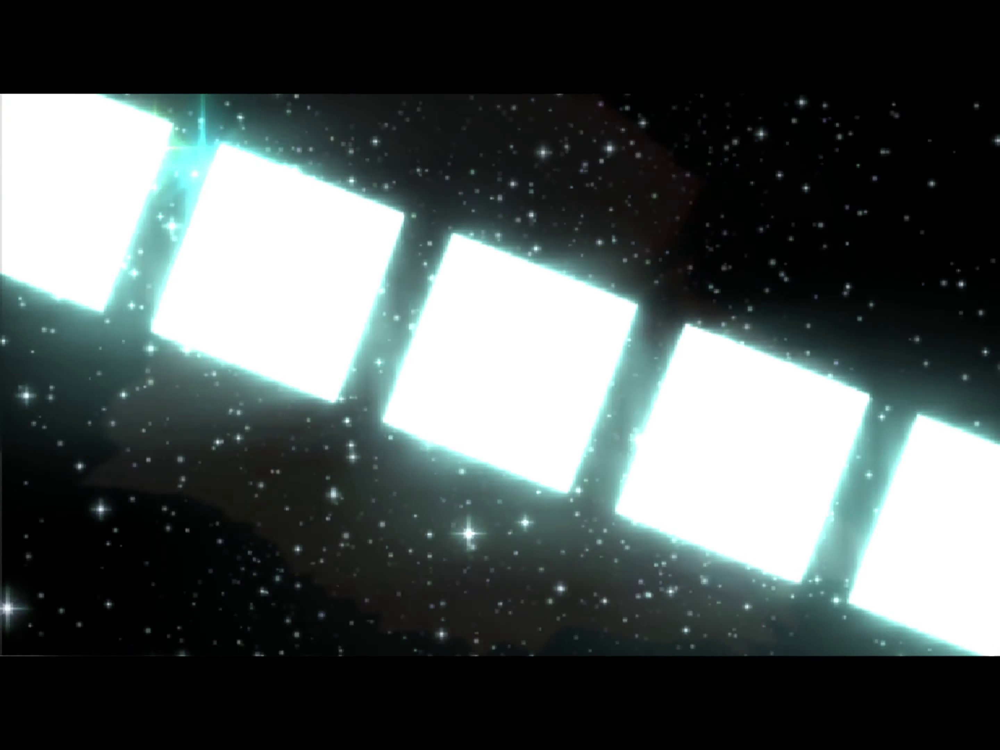
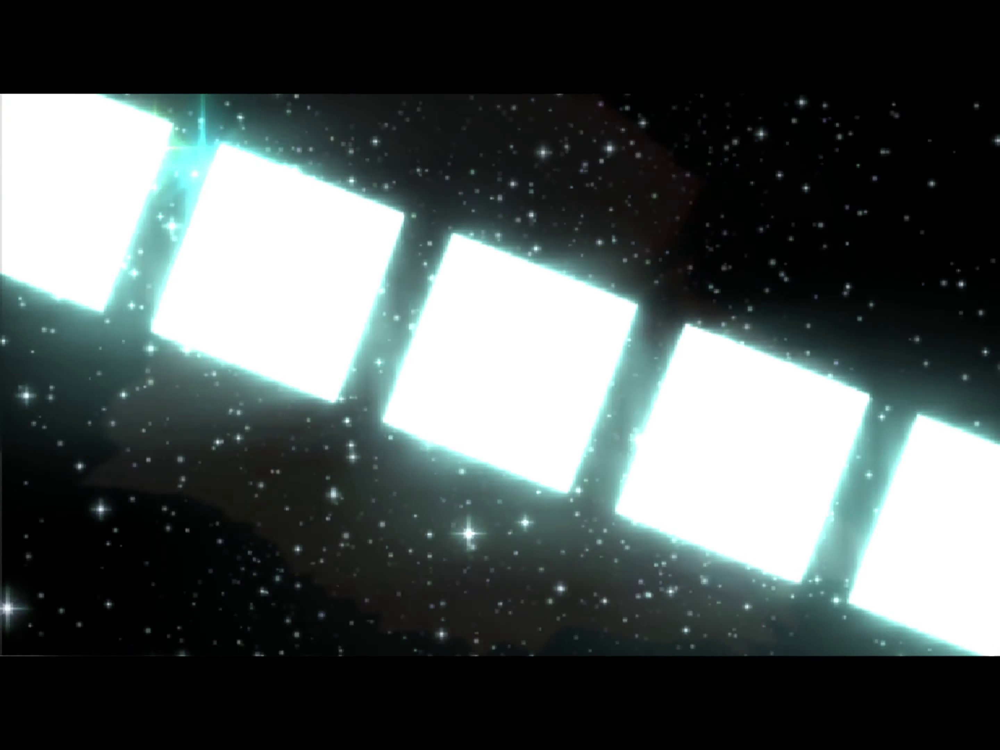

Au sein de la riche mosaïque de la culture urbaine, une multitude de formes d’expression personnelle émergent et trouvent leur voie. Qu’il s’agisse de pensées, d’images, de rythmes et mélodies, ou même de parfums et matériaux transformés, tout devient prétexte à traduire une émotion humaine. Mais que se produit-il lorsque quelqu’un choisit de communiquer par le biais des nombres ?
Moleman 2 - Demoscene - The Art of the Algorithms (2012) - Documentaire
En guise de préambule, il me semblait important de mentionner que les illustrations de ce chapitre sont des strips1 représentant trois images d’une demo, disposées dans l’ordre chronologique de la demo elle-même. Ces images ont été extraites des sites pouet.net et demozoo.org. Leur insertion vise à aérer la lecture de ce premier chapitre et à fournir des exemples visuels pour illustrer certains effets ou concepts discutés dans le texte. L’ordre dans lequel la grande majorité de ces strips apparaissent au sein du texte est totalement aléatoire, sans aucune notion de chronologie.
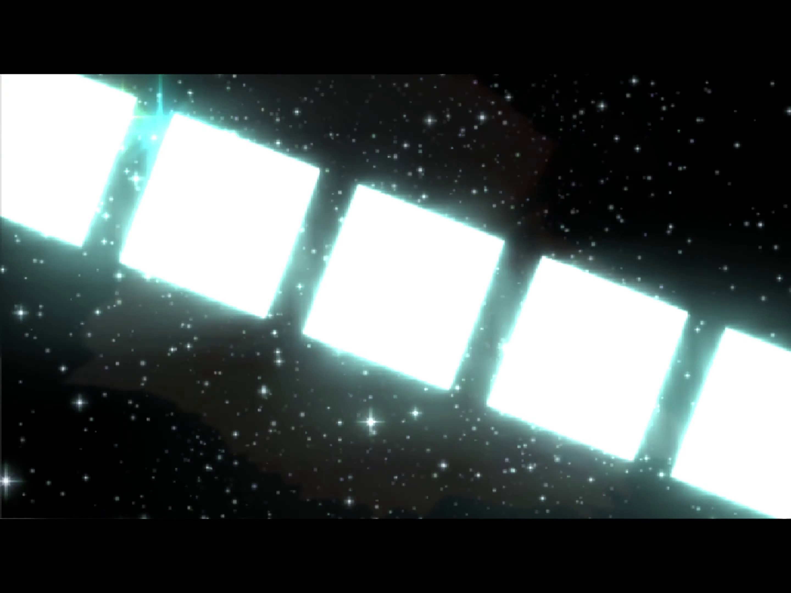
Le terme demo peut évoquer pour certains les démos de jeux vidéo. Cependant, au sein de la demoscene, sa signification s’écarte sensiblement de cette conception. Alors qu’une démo de jeu est conçue pour présenter un aperçu restreint du produit final, une demo dans le contexte de la demoscene se présente comme une œuvre d’art autonome, élaborée pour explorer et repousser les frontières techniques et esthétiques d’un système informatique.
Si les demos et les jeux vidéo partagent des techniques et des compétences techniques avancées, leurs aspirations divergent nettement. Alors que les jeux vidéo adhèrent généralement à un scénario préétabli, une demo cherche à transcender les contraintes techniques pour offrir une expérience sensorielle riche, souvent assimilée à un clip musical.
Pour appréhender pleinement la notion de demo, il convient de se pencher sur son étymologie anglaise, demonstration, qui suggère une performance visant à captiver et impressionner l’auditoire. Conceptuellement, une demo peut être comparée à une animation musicale d’une durée généralement restreinte, souvent quelques minutes. Toutefois, elle ne se réduit ni à une simple vidéo ni à un fichier audio. En réalité, une demo est un programme exécutable, un fichier binaire, au même titre qu’un logiciel ou un jeu vidéo traditionnel.
Pour dépasser ces contraintes techniques, les programmeurs de demos doivent optimiser leur code afin de produire des effets visuels tout en utilisant un minimum de ressources. Nombreux sont les demosceners en quête de techniques permettant d’afficher des graphismes spectaculaires et de repousser les limites de ce qui est réalisable sur une plateforme spécifique.
Il est important de souligner que la demoscene trouve son épicentre de vitalité et de succès en Allemagne et dans les pays scandinaves, où elle jouit d’une forte implantation et d’une activité soutenue. Cette prééminence régionale s’explique en partie par la longue tradition de ces pays dans la mise en avant des compétences en informatique et en art numérique.
Ces nations sont également le berceau des plus grandes demoparties annuelles. Par exemple, la Breakpoint en Allemagne, qui a eu lieu huit fois jusqu’en 2010, attirait régulièrement une audience dépassant le millier de visiteurs venus de près de trente nations différentes. Des événements similaires, tels que l’Assembly en Finlande ou The Gathering en Norvège, bien qu’initialement axés sur la mise en avant des compétences artistiques et informatiques, ont également élargi leur public pour inclure les passionnés de jeux sur PC. Malgré la tenue d’événements plus modestes à travers le monde, le nombre total de productions dévoilées lors de ces rassemblements dépasse désormais les 50 000.
En 2020, la Finlande a inscrit la demoscene sur sa liste nationale du patrimoine culturel immatériel de l’UNESCO2, marquant ainsi une reconnaissance significative de cette forme d’expression artistique numérique. Cette démarche a fait de la demoscene la première sous-culture numérique à être honorée sur une liste de patrimoine culturel immatériel de l’UNESCO. Plus tard, en 2021, l’Allemagne et la Pologne ont également suivi en ajoutant la demoscene à leur liste nationale du patrimoine culturel immatériel de l’UNESCO, suivies par les Pays-Bas en 2023.


On peut situer les origines des demos autour des années 1983-1984, marquées par l’introduction du Commodore 64 (C64) en 1982. Le Commodore 64 est un ordinateur personnel qui a rapidement conquis le marché grâce à son prix attractif et à sa vaste ludothèque. À cette époque, il rivalisait avec les bornes d’arcade en termes de qualité sonore et graphique, éclipsant les consoles de jeux non programmables. Sur le plan matériel, le C64 disposait d’un microprocesseur MOS Technology 6510 à 1 MHz, de 64 Ko de mémoire RAM3 (d’où son nom), et d’une puce graphique et sonore intégrée, le SID (Sound Interface Device) (voir [Commodore64_00] et 1.3). Cette dernière offrait des capacités graphiques et sonores avancées pour son époque.
Le Commodore 64 a grandement contribué à populariser l’informatique personnelle et a été un acteur clé dans l’émergence de la culture hacker, de la demoscene, et de l’industrie du jeu vidéo telle qu’elle est aujourd’hui.
L’émergence et la montée en popularité de la demoscene sont étroitement liées à l’essor des jeux vidéo. Dans les années 80, l’achat de jeux vidéo était souvent une décision risquée en raison de leur coût élevé et de l’absence de critiques ou de journalisme spécialisé pour guider les consommateurs. Sans avis ou évaluations disponibles, les joueurs se retrouvaient parfois déçus par la qualité des jeux qu’ils avaient achetés, découvrant des titres aux graphismes médiocres ou aux bugs gênants.
La copie de jeux est devenue alors une pratique courante, d’autant plus facilitée par la nature des supports utilisés par le Commodore 64. Contrairement aux jeux sur consoles, les jeux du C64, souvent distribués sur cassette, étaient facilement dupliquables sans perte de qualité ou d’informations.

 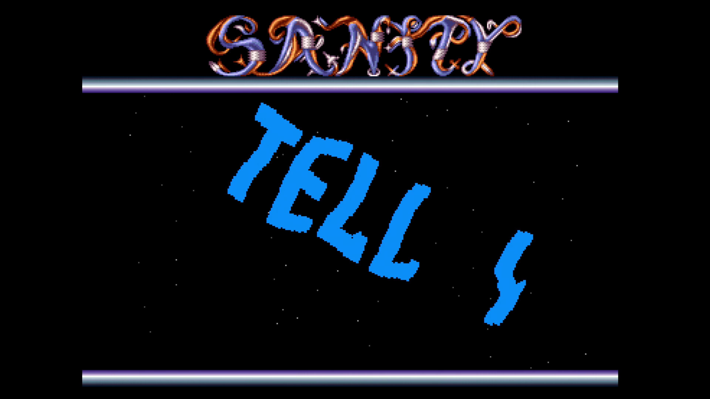
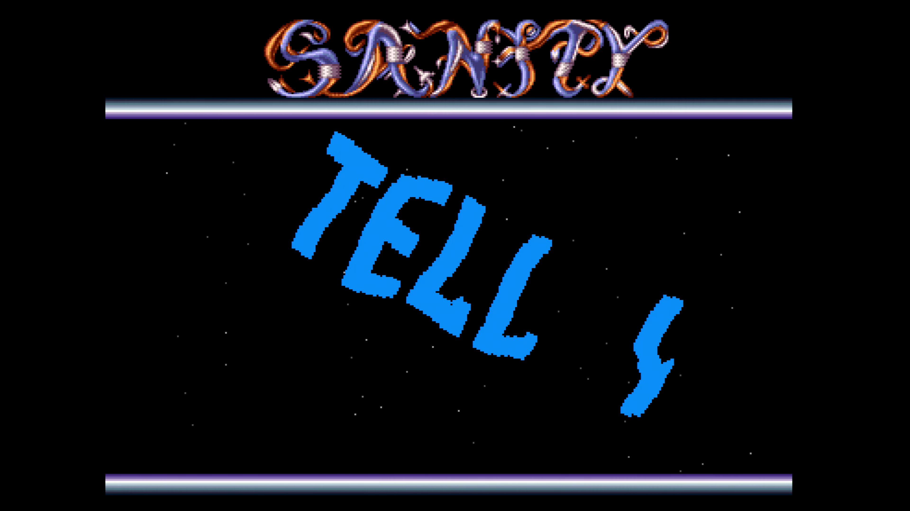
Les jeux piratés circulaient largement, échangés pendant les cours d’école ou via courrier postal. Chaque copie comportait une introduction spécifique, créée par le cracker4 responsable du piratage. Leur maîtrise de la programmation leur a permis de repousser les limites du Commodore 64. Plutôt que d’utiliser le langage BASIC, plus lent, les crackers se sont tournés vers l’assembleur, un langage de bas niveau permettant d’optimiser le code et d’accélérer considérablement l’exécution des programmes. Cette approche leur permettait d’obtenir des performances jusqu’à 30 fois supérieures, transformant ainsi la manière dont les jeux étaient perçus et joués sur le Commodore 64. Ils ont également expérimenté les capacités du C64 pour créer des images et des sons, créant ainsi des expériences audiovisuelles immersives. En utilisant le langage des mathématiques pour coder des programmes, ils ont ouvert la voie à l’expression artistique numérique.
En plus de rendre les jeux gratuits, les crackers offraient des avantages tels que des vies infinies ou la suppression d’ennemis, permettant ainsi aux joueurs d’éviter les obstacles frustrants et de profiter pleinement de leur expérience de jeu. Fiers de leurs exploits, ces crackers intégraient fréquemment leurs initiales ou le nom de leur groupe au démarrage des jeux, que ce soit dans une liste de meilleurs scores ou à travers des éléments graphiques. Ces ajouts servaient de vitrine à leur talent et renforçaient l’identité de leur groupe au sein de la communauté.
Ces introductions élaborées par les crackers pour mettre en avant leur talent et leur travail de contournement des mesures de protection des jeux sont nommées cracktros5 (la contraction des mots intro et crack). Le cracking est devenu bien plus qu’une simple pratique de contournement : c’était une démonstration de compétence et d’expertise technique. Ces crackers étaient admirés au sein de la communauté pour leur capacité à maîtriser la machine et à offrir des versions optimisées des jeux. Au fil des années, ces cracktros ont évolué pour devenir de véritables œuvres d’art numérique, gagnant en sophistication et en complexité.

 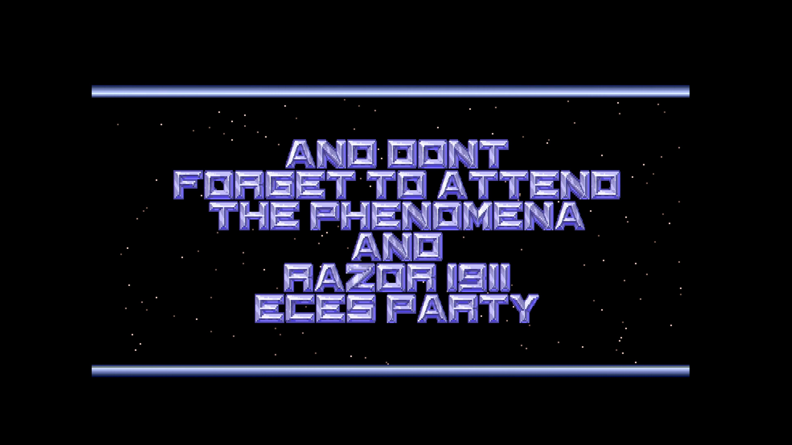
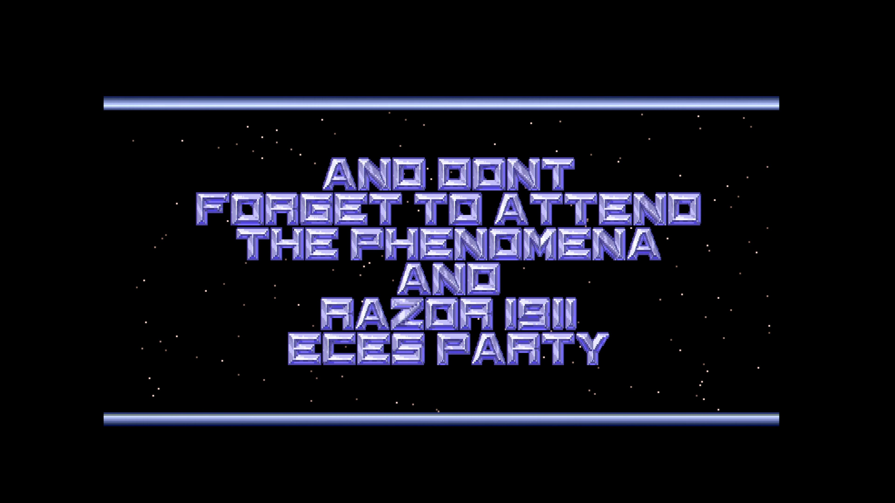
L’année 1984 marque un tournant dans l’histoire des crackers et de la scène du piratage informatique. À cette époque, de nombreux groupes ont émergé, chacun avec sa propre spécialité et sa réputation dans le milieu. Parmi les plus influents, on retrouve des groupes comme TBC, connu pour avoir cracké des jeux populaires tels que « Kennedy Approach » ou « Crackman Crew ».
Les membres de ces groupes n’étaient pas seulement experts en cracking, ils étaient aussi capables d’adapter les jeux NTSC6 destinés au marché américain pour les rendre compatibles avec les systèmes PAL7 utilisés en Europe. Cette adaptation était essentielle pour permettre aux joueurs européens de profiter des jeux américains sur leurs machines locales.
Outre TBC, d’autres groupes européens ont marqué le paysage du cracking. Au Royaume-Uni, Yak Society s’est distingué en crackant les jeux de l’éditeur Elite, tandis qu’en Allemagne, des groupes comme Section 8 et ABC ont également laissé leur empreinte.
La distribution de ces jeux piratés se réalisait de manière analogique, principalement par le biais de la voie postale. Les acteurs clés de cette dynamique étaient les swappers8, des individus passionnés qui avaient établi des réseaux de contacts à l’échelle mondiale. Ces échanges étaient le moteur de la circulation des cracktros, des jeux et des logiciels au sein de la communauté. À travers l’envoi de disquettes par courrier postal, ces swappers facilitaient la diffusion des créations artistiques, contribuant ainsi à la vitalité et à la croissance de la demoscene. Ces échanges ne se limitaient pas seulement à la distribution de contenus, mais renforçaient également les liens entre les membres de la communauté, créant un réseau solide et engagé autour de la passion commune pour la création numérique.
 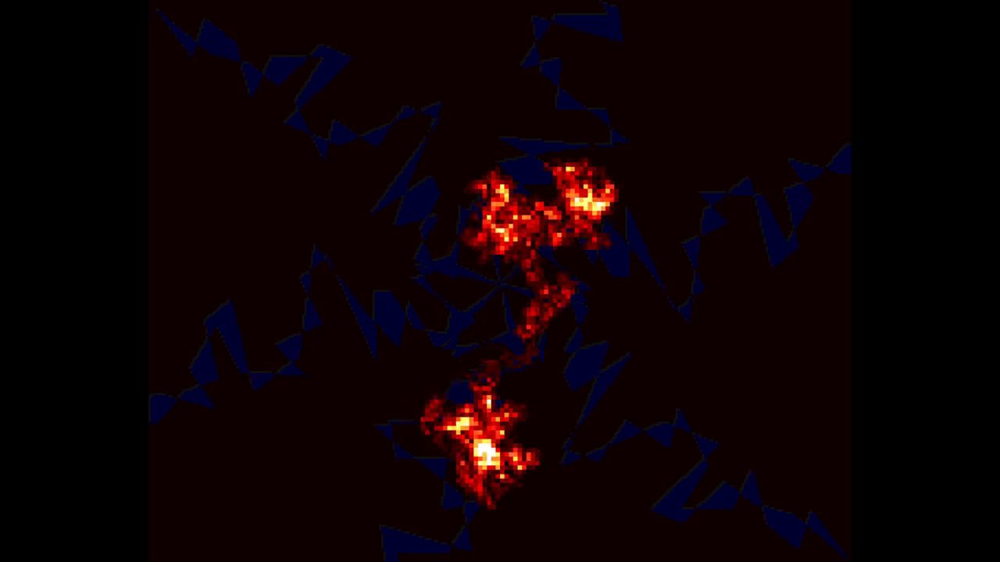
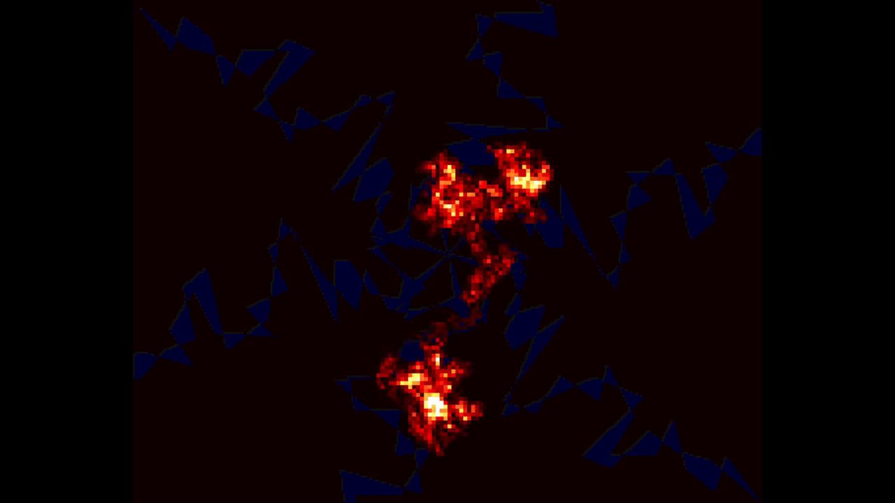

Les éditeurs de jeux ont rapidement réagi pour essayer de contrôler la diffusion de ces copies piratées alors qu’elles se propageaient. Au milieu des années 80, face à l’ampleur du phénomène, une législation a été mise en place en Europe et aux États-Unis visant à interdire toute modification, duplication ou distribution non autorisée de logiciels commerciaux.
Cette réglementation visait à protéger les droits d’auteur des éditeurs et à décourager le piratage des jeux. Elle a marqué un tournant dans l’histoire de la communauté du Commodore 64, mettant fin à l’ère de la duplication libre et créant un contexte juridique plus contraignant pour les amateurs de jeux piratés et les crackers.
Cette évolution légale a poussé certains membres de la communauté à s’orienter vers des pratiques plus créatives et légales, donnant naissance à la demoscene et à la création d’intros9 originales, loin des pratiques de piratage. Malgré cela la créativité des crackers n’a pas été freinée. De nouvelles techniques ont rapidement émergé pour contourner les mesures de protection des jeux.
La première méthode de crack qui a vu le jour était le reset cracking. Cette méthode était relativement simple : en appuyant sur le bouton de réinitialisation (le reset) du Commodore 64, le contenu de la mémoire restait intact, permettant ainsi aux crackers d’accéder au programme en cours d’exécution. En gelant le programme, ils étaient alors en mesure d’extraire et de modifier les données. Par la suite, des modules de gel sur support cartouche ont été développés. Ces cartouches offraient la possibilité de geler le système sans avoir besoin de réinitialiser l’ordinateur, rendant la manipulation encore plus aisée et rapide pour les crackers.
Cette course à l’armement entre crackers et éditeurs a contribué à enrichir les compétences techniques de la communauté, ouvrant la voie à de nouvelles formes d’expression et à l’émergence de la demoscene.
La culture du cracking a également développé ses propres codes et valeurs. L’élitisme et l’avant-gardisme en opposition aux lamers10 sont devenus des caractéristiques marquantes de la scène, reflétant la volonté des membres de se démarquer et de repousser les limites de ce qui est possible. De nombreux adolescents ont été inspirés par cette culture et ont rêvé de devenir un jour un cracker de renom, contribuant ainsi à la croissance et à la pérennité de la demoscene.
 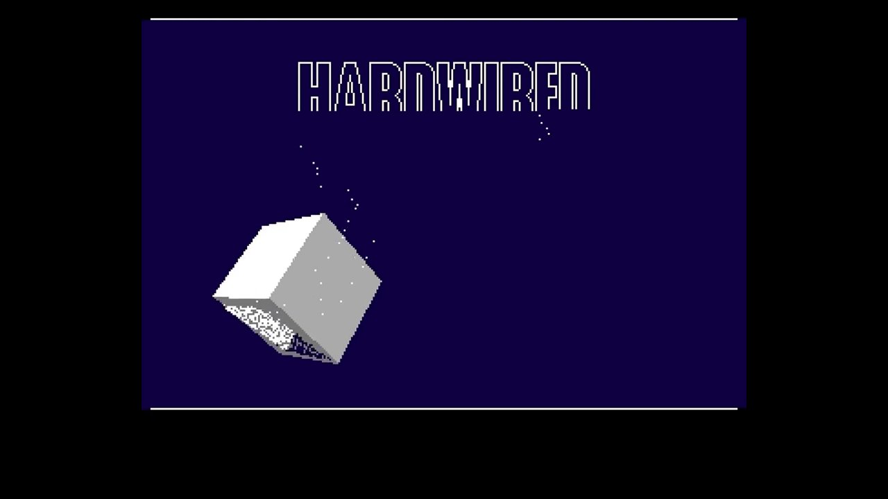
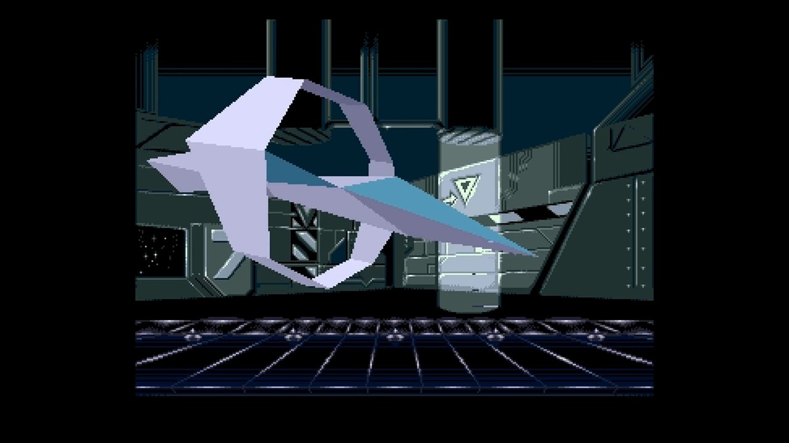
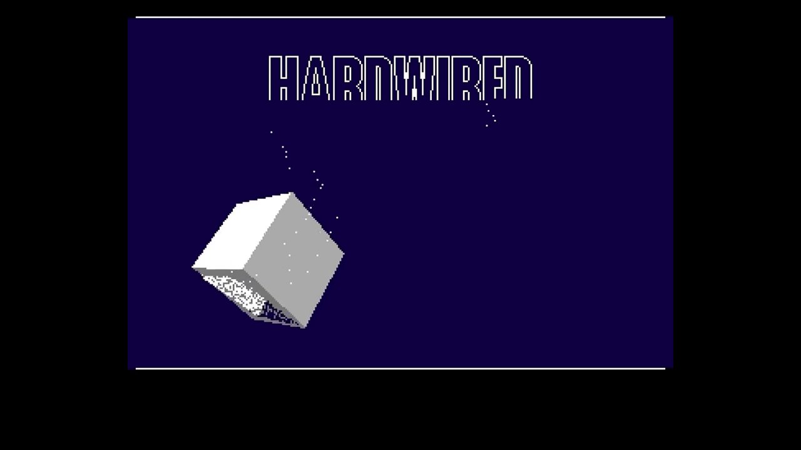
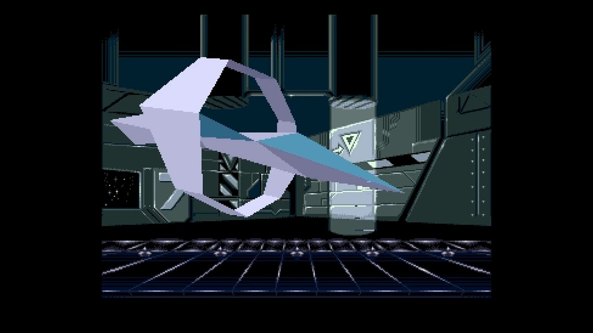
Face à la surveillance accrue du FBI (Federal Bureau of Investigation), les crackers ont rapidement ajusté leurs méthodes pour échapper à la détection. L’élite11 de la scène a développé des techniques pour brouiller les pistes et rendre leur communication moins suspecte.
Le FBI mettait en place des systèmes de surveillance des lignes téléphoniques en utilisant des ordinateurs pour détecter certains mots-clés ou phrases suspects. Afin d’éviter cette surveillance, les crackers ont commencé à utiliser ce qu’on appelle maintenant le leet speak12. Ils ont altéré les mots et les phrases de façon à les rendre méconnaissables pour les systèmes de surveillance.
À titre d’exemple, le terme wares, faisant référence aux logiciels piratés, a été modifié en warez, tandis que la lettre « O » a été substituée par le chiffre zéro (« 0 »). D’autres substitutions étaient également courantes, comme remplacer la lettre « A » par le chiffre quatre (« 4 »). Certains ont même utilisé des caractères spéciaux ou des lettres de l’alphabet non latin pour brouiller davantage les pistes.
Cette pratique du leet speak n’était pas seulement une manière de contourner la surveillance, mais aussi un moyen pour la communauté de se démarquer et de créer un langage propre à leur culture. Cette forme d’argot électronique a perduré au fil du temps et est encore utilisée aujourd’hui, notamment dans les pseudonymes et les communications sur Internet. Elle témoigne de l’ingéniosité et de la résilience de la demoscene face aux défis et aux menaces externes.
Malgré leurs débuts dans le piratage et le cracking, ces experts en informatique ont su mettre leurs compétences au service de l’industrie de manière légale et productive. Leur expérience dans le cracking leur a souvent donné un avantage unique, leur permettant de comprendre en profondeur les systèmes et les logiciels, et de contribuer de manière significative au développement technologique et informatique. Cette transition illustre bien la complexité et la dualité de la scène du cracking, où les frontières entre le légal et l’illégal, entre le jeu et le travail, sont parfois floues. Leurs compétences sont particulièrement prisées dans des secteurs comme le développement de jeux vidéo, l’animation, les effets spéciaux et la post-production.
Bon nombre de professionnels éminents de l’industrie du jeu vidéo et de l’animation ont fait leurs premiers pas dans la scène demo. Cette dernière offre en effet une plateforme unique pour l’expérimentation, le feedback en temps réel de la communauté et le perfectionnement des compétences. Elle constitue ainsi un tremplin exceptionnel pour une carrière réussie dans les domaines créatifs et technologiques.
Les groupes DICE13 et Remedy14 illustrent parfaitement comment des groupes de demosceners ont su transformer leur passion et leur talent en des carrières accomplies au sein de l’industrie du jeu vidéo. Ces success stories soulignent l’impact considérable que la créativité et l’innovation de la scène demo peuvent avoir, transcendant ainsi les limites traditionnelles de cette communauté. En outre, il est important de souligner que de nombreux musiciens issus de la scène demo ont saisi des opportunités professionnelles dans la composition de bandes sonores pour des titres emblématiques tels qu’Assassin’s Creed ou la série Unreal.
Nous allons maintenant aborder les divers facteurs qui ont contribué à l’évolution de la demoscene, ainsi qu’examiner de plus près les techniques utilisées.
 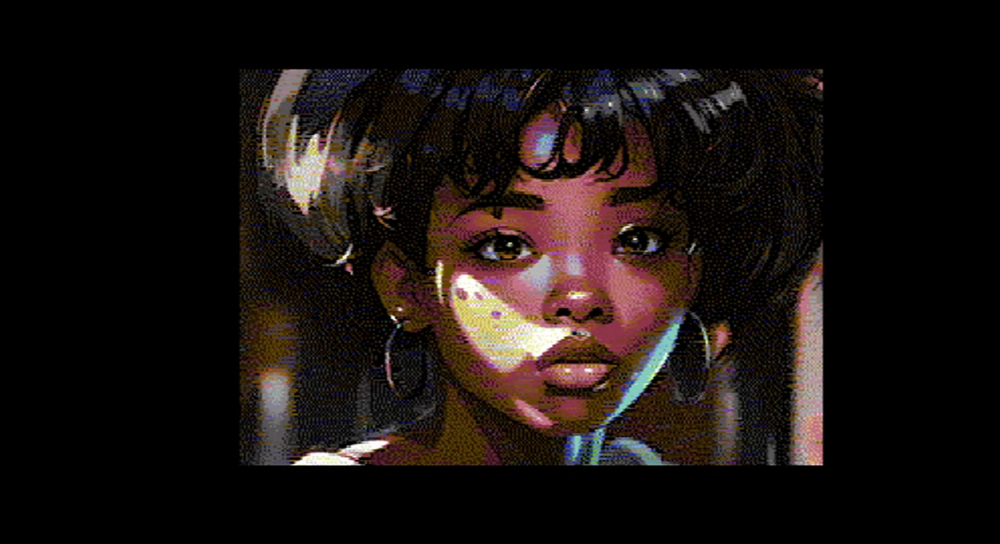
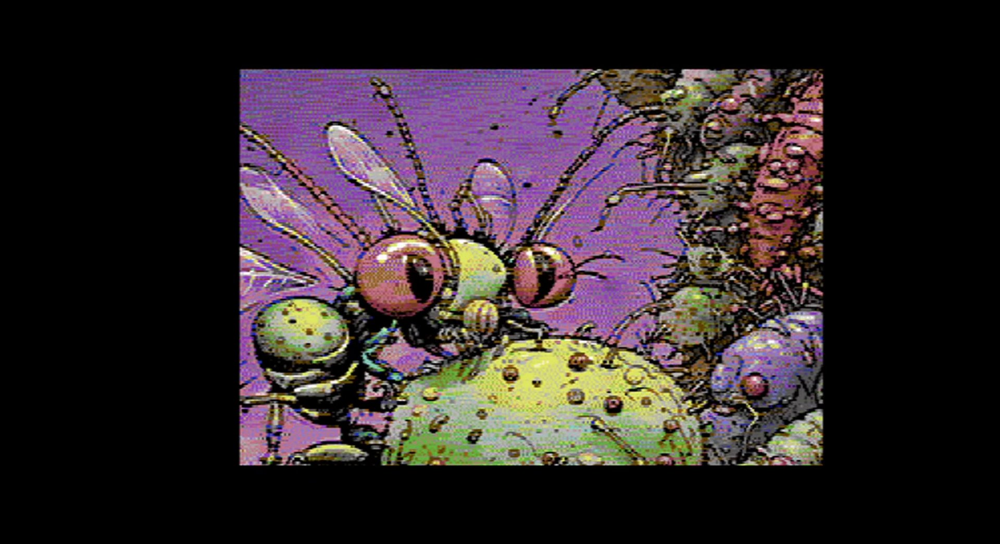
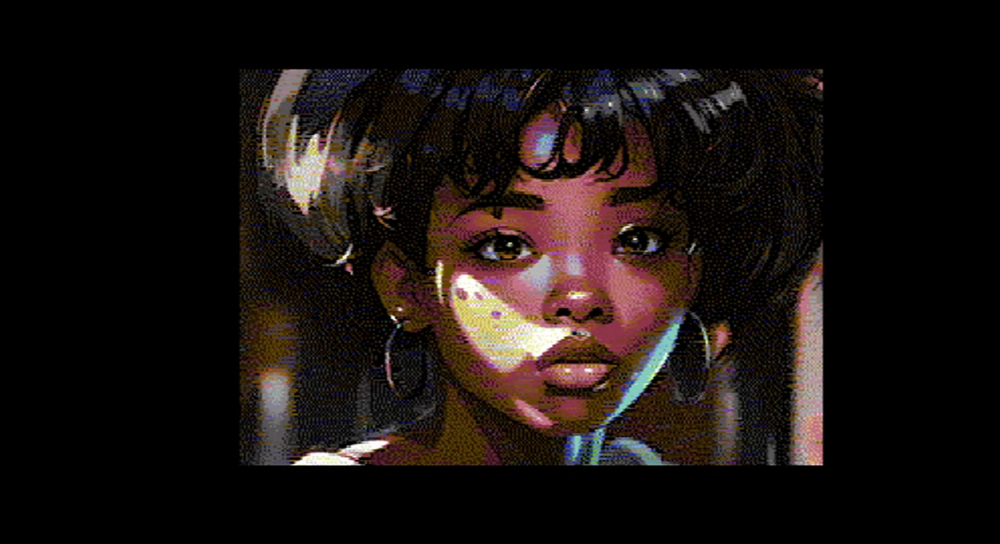
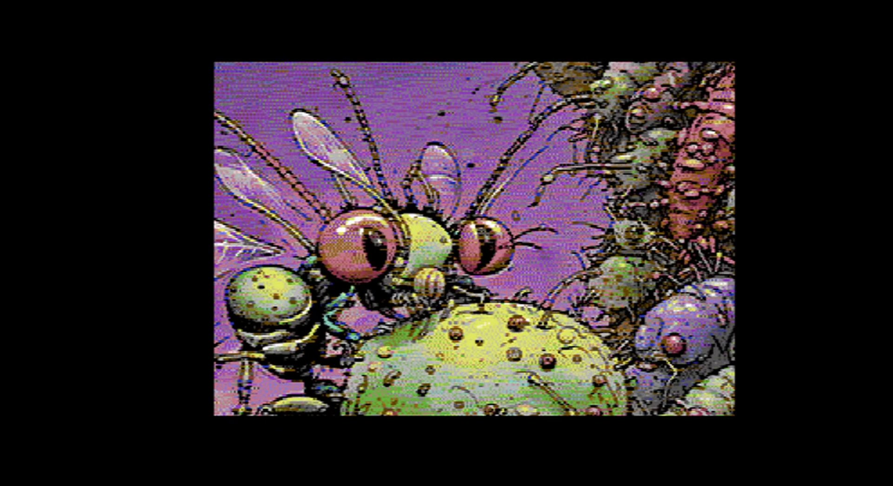
Si à l’origine l’objectif principal était de réussir le « crackage » d’un jeu, il est rapidement devenu évident que la création d’intros de qualité était tout aussi cruciale pour se démarquer au sein de la communauté. C’est aussi vers le milieu des années 80 que la scène a véritablement pris de l’ampleur, se structurant de manière plus formelle. Les groupes de crackers ont commencé à se rencontrer physiquement en organisant des rencontres et des rassemblements. Ces demoparties étaient l’occasion pour les passionnés de l’informatique et de la demo de se rencontrer, de partager leurs créations, et d’échanger des astuces ou des techniques de programmation.
Les demos se distinguent des cracktros par leur complexité accrue et leur autonomie vis-à-vis des logiciels originaux. Elles ne se contentaient plus de présenter les capacités de cracking des groupes, mais devenaient de véritables œuvres d’art combinant programmation, design et musique pour offrir une expérience immersive.
L’évolution des signatures des crackers reflète bien la transition de la scène du simple cracking vers la création d’intros plus élaborées. Initialement, la signature était une manière discrète pour le cracker de laisser sa marque sur une copie piratée. Cette signature, souvent composée de trois lettres, rappelait les initiales utilisées dans les jeux d’arcade pour marquer les meilleurs scores. Elle servait à identifier l’auteur du crack, tout en affirmant sa réputation au sein de la communauté. Cependant, avec l’émergence de la demoscene, cette simple signature a rapidement évolué. Les crackers ont commencé à utiliser les intros comme un média pour afficher leur pseudonyme de manière plus graphique et artistique. Au lieu de se limiter à une combinaison de trois lettres, ils ont intégré leur pseudonyme dans des logos aux animations complexes (voir 1.9).
En parallèle l’Amiga a révolutionné l’informatique personnelle en se positionnant comme un précurseur du multimédia, surpassant ses concurrents de l’époque. Son avance technologique, illustrée par l’Amiga 1000 lancé en 1986 (voir [am1000]), a introduit des innovations majeures comme le son numérique, les graphismes couleur et un système multitâche révolutionnaire pour l’époque. Malgré ces avancées, le coût élevé de l’Amiga a initialement freiné son adoption parmi les demosceners, en particulier par rapport au Commodore 64.


L’introduction de l’Amiga a été un catalyseur pour la création d’une scène spécifique autour de cette plateforme. Elle a vu l’émergence de groupes dédiés, chacun avec ses spécialités : crackers et demomakers. Deux courants distincts se sont formés : l’un axé sur les programmes DOS15 et l’autre sur les trackloaders16.
Les programmes DOS sur Amiga étaient souvent caractérisés par une approche plus structurée et formelle, avec une présentation plus traditionnelle et un enchaînement linéaire des effets. A contrario, plutôt que de charger toutes les données nécessaires pour une demo au début de l’exécution, le trackloader charge les données progressivement à partir du disque pendant que la demo est en cours d’exécution. Cette méthode permet d’offrir une expérience plus fluide et dynamique, car elle réduit les temps de chargement et permet un enchaînement plus naturel des effets et des scènes.
L’essor de l’Amiga a marqué un tournant dans la création musicale au sein de la demoscene. Les premiers logiciels utilisés, appelés trackers, rappellent les outils du C64 mais offraient la capacité de jouer des sons numérisés. Cette évolution a ouvert la porte à des compositions musicales plus complexes et sophistiquées, enrichissant ainsi la qualité sonore des demos.
Aujourd’hui, les créateurs de demos ont accès à des logiciels de production musicale plus avancés, les mêmes qui sont utilisés pour produire les morceaux diffusés à la radio ou en streaming. Cependant, les contraintes de taille imposées par les demos de 4 ou 64 Ko limitent l’utilisation de ces sons numérisés.
Face à ces limitations, les artistes reviennent souvent aux techniques ancestrales de la demoscene. Ils créent des sons en partant de simples formes d’ondes, utilisant des méthodes de synthèse sonore pour générer des mélodies et des rythmes envoûtants. Ces approches minimalistes rappellent les débuts de la musique sur le C64, mais avec l’ingéniosité et l’expérience acquises au fil des années, les artistes parviennent à produire des compositions étonnamment riches et variées, démontrant ainsi que la créativité peut s’épanouir même dans les contraintes les plus strictes.

Les demos Amiga ont élargi leurs horizons en incorporant des diaporamas, des albums musicaux et des diskmags, se démarquant clairement par leur qualité supérieure par rapport aux diskmags du C64. En plus des échanges directs entre individus, des médias physiques ont commencé à voir le jour pour soutenir et documenter la scène.
Des magazines papier et des fanzines numériques ont été créés (les diskmags17), offrant un espace d’expression aux membres de la communauté et permettant de partager des actualités, des tutoriels, des critiques et des analyses (voir [diskmag1], [diskmag1] et 1.13).
Ces publications ont joué un rôle important dans la diffusion des idées et des valeurs de la demoscene et du hacking. Des titres comme Sex’n’Crime, Mamba et Fölény sont devenus emblématiques. Ces publications, enrichies de nouvelles, de critiques de demos, de classements et d’informations sur les copyparties, ont conféré à la scène une dimension plus structurée et sérieuse.


C’est durant cette période qu’un véritable esprit compétitif a pris forme au sein de la communauté des demosceners. Une course à l’exploit était engagée : qui serait le premier à pirater un jeu ? Qui concevrait l’intro la plus marquante ? L’esprit de compétition a incité les créateurs à repousser les limites techniques de leurs machines. Les effets visuels se sont multipliés et complexifiés: animations de sprites, rotations, rebonds, effets de miroir, et bien d’autres encore. La musique n’était pas en reste, devenant de plus en plus sophistiquée.
Au-delà de la compétition purement technique, l’ego et le prestige ont également pris une place importante dans cet univers. Chaque groupe se devait de présenter un cracktro de qualité, non seulement pour montrer leur expertise technique, mais aussi pour asseoir leur réputation au sein de la communauté.


La dimension communautaire joue un rôle tout aussi essentiel que le talent individuel dans la dynamique de la demoscene, contribuant à nourrir un esprit créatif et collaboratif. L’événement phare de cette communauté est la demoparty, une manifestation dédiée à la célébration de la culture informatique. Lors de ces rassemblements, les participants ont l’opportunité de mettre en lumière leurs compétences et créations, d’échanger des connaissances et des idées, et de rencontrer des individus animés par la même passion. Les œuvres produites y sont présentées dans diverses catégories et soumises à l’appréciation du public et des pairs, renforçant ainsi l’esprit de compétition et de camaraderie qui anime la demoscene.
Concourir lors d’une demoparty représente une expérience unique pour les demomakers. C’est l’occasion de voir leur travail projeté sur un grand écran, sublimé par une bande sonore diffusée sur un système son de qualité, devant un auditoire attentif et passionné. Ce moment de partage et de reconnaissance collective est souvent source d’inspiration et de motivation pour les participants.

Cette course à l’innovation et à la créativité a contribué à faire de la demoscene un mouvement dynamique et en constante évolution, où chaque nouvelle réalisation repousse un peu plus les frontières de ce qui est techniquement possible. Ce qui pouvait impressionner une année semblait déjà dépassé l’année suivante. Cet esprit compétitif a conduit à la création de diverses catégories, chacune présentant ses propres contraintes spécifiques.
L’introduction de la catégorie 4k a marqué une étape significative dans l’évolution de la demoscene. Contrairement aux productions plus volumineuses qui disposent de plusieurs mégaoctets pour exprimer leur vision artistique, les productions 4k se limitent à seulement 4 kilooctets de données. Cette contrainte sévère en taille a poussé les demosceners à optimiser les possibilités de compression pour produire des œuvres imposantes malgré leur petite taille.
Malgré les contraintes, les demomakers redoublent d’astuces pour y parvenir. Bien que les résultats soient souvent d’une qualité graphique médiocre, il est important de souligner que la taille de ces intros est même inférieure à celle d’un document Word vide. Le format 4k a donc donné naissance à des demos qui démontrent la puissance et le génie des demosceners, en montrant qu’il est possible de réaliser des prouesses artistiques et techniques avec des ressources limitées.
Une des intros 4k les plus célèbres sur Commodore 64 est « We Are New » par Fairlight (voir 1.17). Cette intro a été saluée pour son ingéniosité technique et son esthétique, tout en tenant dans la contrainte de seulement 4 kilooctets de données.

Les intros 64k occupent une place particulière dans la demoscene, se positionnant entre les intros 4k et les demos full size. Elles offrent une limite de 64 kilooctets de données, soit bien plus que les 4 kilooctets des intros 4k, mais nettement moins que les demos full size qui peuvent s’étendre sur plusieurs mégaoctets.
Ici aussi, le défi des intros 64k est de marier créativité artistique et optimisation technique dans un espace de stockage restreint. Ce format permet aux demosceners de concevoir des œuvres plus élaborées, avec des graphismes, des effets sonores et des animations de qualité supérieure, tout en restant dans une taille de fichier modeste. L’objectif est là encore d’exploiter au maximum les 64 kilooctets disponibles.
L’intro 64k se distingue par son système similaire aux intros 4k, mais avec une limite étendue à 65535 octets. Ce format offre aux codeurs une plus grande marge de manœuvre créative, leur permettant de collaborer étroitement avec des graphistes et des musiciens pour créer des intros marquantes. C’est pourquoi l’intro 64k est l’une des catégories les plus appréciées des demomakers, juste derrière la catégorie reine : la demo full size.
Une des intros 64k les plus célèbres et influentes dans la demoscene est « fr-08: .the .product » réalisée par Farbrausch en 2000 (voir 1.18). Cette intro a marqué un tournant dans la catégorie des intros 64k, démontrant une optimisation et une créativité jamais vues auparavant.
« fr-08: .the .product » a été distinguée non seulement pour ses effets visuels, mais aussi pour sa musique et sa synchronisation. Elle a repoussé les limites de ce qui était considéré comme possible dans un fichier de seulement 64 kilooctets, influençant de nombreux demomakers et définissant de nouvelles normes pour les intros 64k. Cette intro est souvent citée comme un exemple de ce que la demoscene peut réaliser.
 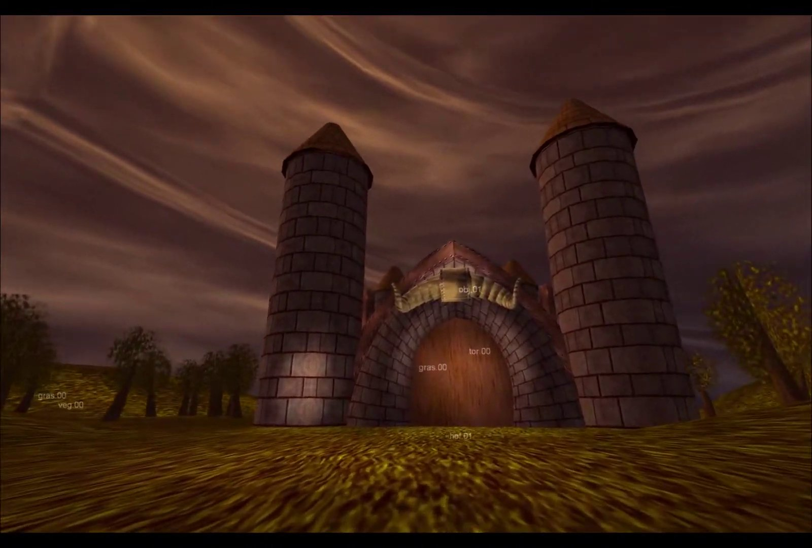
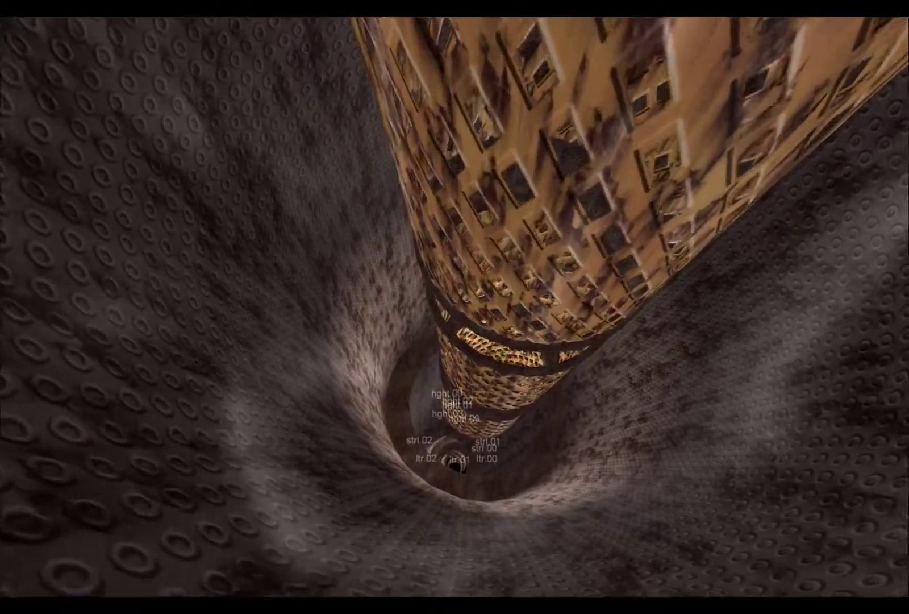
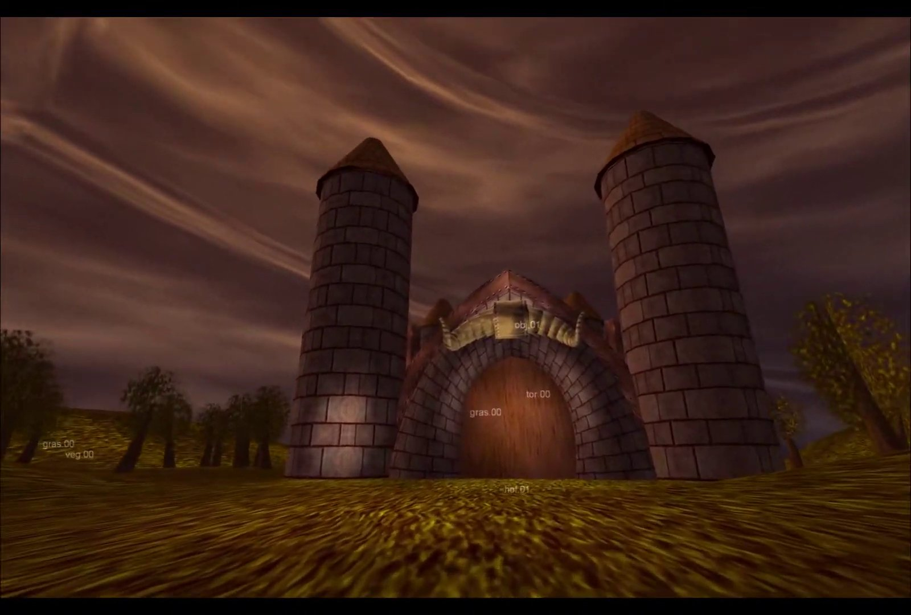
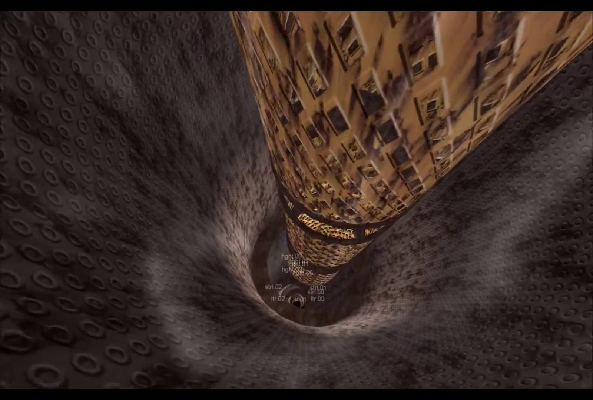
La catégorie demo full size par ses productions les plus ambitieuses et les plus abouties , constitue le cœur battant de la demoscene. À l’inverse des intros 4k et 64k, soumises à des contraintes de taille de fichier plus strictes, les demos full size se libèrent de toute limite prédéfinie en termes de mémoire ou de temps d’exécution.
Ce format offre aux demosceners un espace de création illimité pour déployer tout leur talent et leur savoir-faire. Les demos full size exploitent ainsi pleinement les capacités des machines sur lesquelles elles sont exécutées, que ce soit en termes de graphismes, d’animations, d’effets sonores ou de musique. Elles représentent souvent le résultat d’un travail d’équipe collaboratif, où artistes, codeurs, graphistes et musiciens fusionnent leurs compétences pour donner vie à une vision artistique commune.
Les productions de cette catégorie peuvent durer plusieurs minutes et offrent une expérience riche et immersive aux spectateurs. Elles peuvent raconter une histoire, présenter un univers visuel ou sonore unique, ou encore mettre en avant des techniques de programmation et de design nouvelles. La taille traditionnelle des demos est limitée à 4Mo, bien que cette limite soit souvent dépassée, comme l’illustre la demo de plus de 12Mo réalisée par Cocoon & Syndrome pour « Shad » (voir 1.19).

 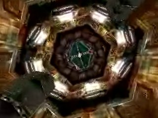
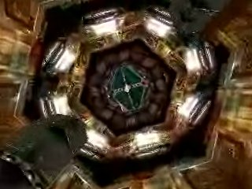
En somme, la catégorie demo full size est le terrain de jeu privilégié des demosceners pour exprimer leur créativité sans limites, repoussant constamment les frontières de l’art numérique et de la programmation, tout en offrant une liberté d’expression artistique inégalée.

La catégorie gfx (graphics) dans la demoscene se centre sur la création graphique et artistique, mettant en lumière le talent des graphistes qui élaborent des œuvres visuelles pour les demos, intros et autres productions de la demoscene. Pour exceller dans ce domaine, les graphistes doivent posséder une variété de compétences. Ils doivent maîtriser des logiciels de dessin et de retouche d’image, tout en ayant une compréhension approfondie des contraintes techniques propres à la demoscene, telles que la gestion des palettes de couleurs et l’optimisation des tailles de fichiers.
Les productions gfx peuvent prendre diverses formes, qu’il s’agisse d’images fixes, d’animations ou même de séquences vidéo. Elles sont souvent évaluées sur des critères tels que leur originalité, leur qualité artistique, leur technique et leur intégration harmonieuse dans la production globale. La catégorie gfx est une catégorie permettant aux graphistes de la demoscene de mettre en avant leur talent, de partager leur passion pour l’art graphique et de contribuer à enrichir les productions communautaires avec des visuels.
Cette catégorie gfx est elle-même subdivisée en plusieurs sous-catégories, telles que les 8bits (256 couleurs) et les 32bits. Il est important de noter que l’utilisation de photos scannées est généralement mal vue, voire interdite.
 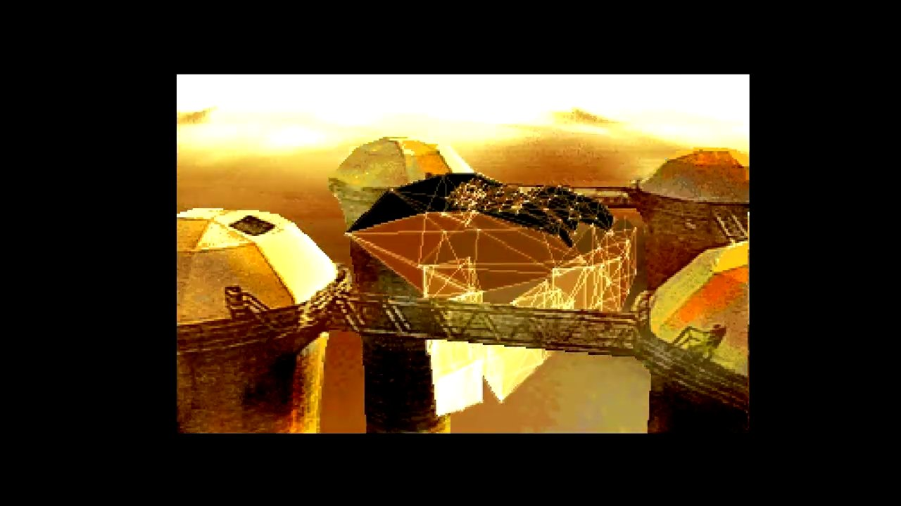
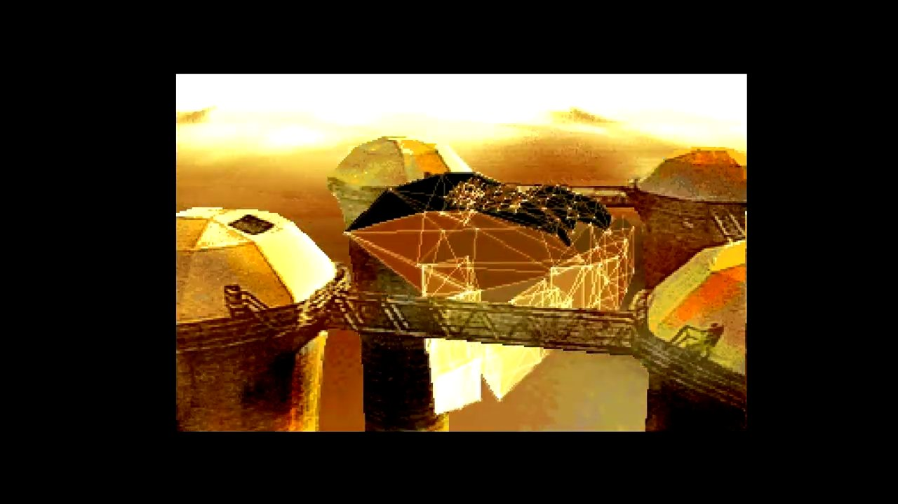

La catégorie mod (module) dans la demoscene est dédiée à la création de musique et de sons, qui sont essentiels pour enrichir l’expérience audio des demos ou des intros. Les modules sont des fichiers spéciaux contenant à la fois des données musicales et des instructions pour les instruments, permettant ainsi de reproduire des compositions musicales variées. Ces créations sont le résultat du travail des musiciens et sound designers de la demoscene qui utilisent des trackers18, des logiciels spécifiques à la demoscene, pour composer leurs morceaux.
Les compétences nécessaires pour exceller dans cette catégorie sont nombreuses et incluent une connaissance approfondie des principes de la composition musicale, ainsi qu’une maîtrise des techniques spécifiques à la création de mods. Parmi ces techniques, l’utilisation des trackers et la manipulation des échantillons sonores sont particulièrement importantes. Les mods peuvent varier grandement en style et en genre, allant de la musique électronique à la musique classique, en passant par le rock, le jazz et bien d’autres. Ils sont évalués sur des critères tels que leur originalité, leur qualité musicale, leur technique et leur intégration dans la production globale.
Autrefois, cette catégorie comprenait des compétitions Modules 4 voies et multichannels, mais elle a évolué avec l’arrivée du format MP3, qui a en grande partie remplacé les compétitions traditionnelles. Le concept des modules, initialement développé par les demomakers sur Atari et porté sur diverses plateformes comme l’Amiga, le PC ou l’Amstrad, est fondé sur l’enregistrement de petits sons pour composer une partition. Des logiciels comme FastTracker2 ou Scream Tracker sont utilisés pour créer ces partitions en manipulant les sons enregistrés à différentes vitesses pour reproduire les notes musicales (voir [fasttracker00] et 1.22). Certains musiciens de la demoscene, tels que Skaven, Clawz et Necro, sont reconnus comme des références dans cet art.
Dans les compétitions, les modules 4 voies permettent de jouer jusqu’à 4 instruments simultanément, tandis que les multichannels offrent une plus grande capacité, souvent limitée à 32 ou 64 portées. Cette catégorie mod offre ainsi une plateforme aux musiciens et sound designers de la demoscene pour exprimer leur talent, partager leur passion pour la musique et contribuer à enrichir les productions de la communauté demoscene avec des compositions audio.

Au fil du temps, l’évolution de la demoscene a engendré l’émergence de formes artistiques nouvelles, difficiles à catégoriser au sein des catégories traditionnelles comme la musique, les images ou les demos. De cette évolution est née la catégorie wild, qui s’est imposée comme un terrain d’expression artistique non conventionnel.
Les concours wild offrent souvent des spectacles en direct où les créateurs montent sur scène pour dévoiler leurs œuvres. Ces présentations peuvent varier d’un microcontrôleur récupéré d’un réfrigérateur à des performances artistiques plus extravagantes. Malgré leur caractère parfois déconcertant, ces productions sont généralement le fruit d’un travail sérieux et méticuleux, combinant effets visuels et compositions musicales.
Aucune machine, aussi insolite soit-elle, n’échappe à l’exploration artistique de la demoscene. De la simple calculatrice de poche aux installations monumentales, tout peut être utilisé comme vecteur d’expression artistique, reflétant ainsi la diversité de la communauté.


Nous allons maintenant étudier quelques techniques fréquemment utilisées afin d’appréhender leur impact visuel. Parmi les méthodes adoptées par les demosceners pour leurs créations, nous avons précédemment mentionné l’usage de la programmation en assembleur par les crackers pour optimiser à la fois les performances et la taille des demos. De plus, sur le Commodore 64, des fonctionnalités hardware souvent méconnues ont été découvertes par les programmeurs astucieux de la demoscene. Parmi ces trouvailles, on peut citer la capacité à éliminer la bordure de l’écran grâce aux raster interrupts, ou encore l’utilisation d’un quatrième canal pour le son.
Les raster interrupts sont une technique utilisée dans la demoscene, notamment sur le Commodore 64, pour synchroniser des effets visuels avec le balayage de l’écran (raster). Le Commodore 64, comme de nombreux autres ordinateurs de cette époque, utilise un balayage raster pour afficher les images à l’écran, c’est-à-dire qu’il dessine l’écran ligne par ligne, de haut en bas. Un raster interrupt intervient lorsqu’un programme interrompt le processus normal de balayage raster pour exécuter un code spécifique.
Dans la demoscene, les raster interrupts sont souvent utilisés pour créer des effets graphiques avancés, comme des rasterbars, des effets de scrolling et d’autres animations complexes comme le waving.
Bien que le Commodore 64 puisse afficher seulement 16 couleurs dont seulement cinq nuances de gris, y compris le noir et le blanc, certaines demos parvenaient à afficher plus de couleurs que cette palette de base. Une méthode pour y parvenir est d’alterner rapidement entre deux écrans légèrement différents pour mélanger les couleurs, exploitant la persistance rétinienne19. Cette technique est exposée dans « Dream Time » du groupe Profik, où deux buffers sont alternés 60 fois par seconde pour créer l’illusion de couleurs supplémentaires.
Un scroll fait référence à une technique où le texte ou les graphiques défilent horizontalement ou verticalement à l’écran. Cette technique était largement utilisée pour afficher des crédits, des messages ou des graphismes artistiques dans les demos et les intros. Initialement simples textes défilants, ils ont évolué vers des versions DYPP (Different Y Pixel Position) ondulantes, des stretch-scrollers irréguliers, des scrollers inspirés de Star Wars, ou encore des scrollers en 3D virtuelle autour d’une sphère.
Le waving désigne un effet graphique simulant des vagues ou des ondulations sur l’écran. Cet effet est souvent obtenu en manipulant les pixels ou en modifiant les lignes de balayage de manière à créer une illusion de mouvement fluide et ondulant.
Un rasterbar fait référence à un effet visuel créé en manipulant les lignes de balayage (rasters) de l’écran. L’effet est généralement réalisé en changeant dynamiquement la couleur ou la luminosité des lignes de balayage pour créer des motifs ou des animations. Ces effets exploitent les caractéristiques techniques des anciens ordinateurs, comme le Commodore 64, qui permettaient un contrôle précis des lignes de balayage.
Bouncing fait référence à un effet visuel où un objet ou du texte semble rebondir de haut en bas ou de gauche à droite à l’écran. Cet effet est souvent utilisé pour ajouter du dynamisme et de l’animation à une demo ou à une intro, donnant ainsi une sensation de mouvement et d’interaction.
Un logo désigne généralement un élément graphique représentant le nom ou l’identité visuelle d’un groupe de demosceners. Ce logo est souvent intégré dans les intros, les demos ou les cracktros pour identifier le groupe ou le collectif derrière la production. Il est conçu pour être distinctif et mémorisable, reflétant souvent le style et l’esthétique du groupe.
La demoscene d’aujourd’hui est marquée par l’usage persistant d’ordinateurs obsolètes tels que le Commodore 64, le Plus 4, le ZX Spectrum et l’Amiga. Ces machines, bien que technologiquement dépassées et dotées de limitations parfois drastiques datant de plusieurs décennies, continuent d’inspirer et de servir de supports à des réalisations.
Cette persistance reflète la popularité indéniable de ces machines emblématiques. Le Commodore 64, par exemple, conserve son titre de champion en termes de créativité au sein de la demoscene, avec un impressionnant catalogue de plus de 18 000 productions recensées. Ce chiffre surpasse même celui des créations pour PC, qui s’élève à environ 14 000, mettant en évidence la fascination continue pour ces anciennes plateformes.
Cette inclination pour les machines d’antan ne se résume pas à de la nostalgie. Elle témoigne d’une volonté de repousser les limites, de défier les contraintes techniques et de valoriser l’ingéniosité nécessaire pour créer des demos sur des plateformes aux capacités limitées. De plus, l’utilisation de ces machines historiques dans la création contemporaine renforce le lien entre les générations de demomakers et perpétue l’héritage culturel de la demoscene.
Aujourd’hui, deux approches dominantes structurent la création d’intros ou de demos sur PC. La première, plus traditionnelle, implique une programmation intégrale de chaque élément de la demo à partir de zéro. En revanche, la seconde repose sur l’utilisation d’outils de création de demos spécialement élaborés par les programmeurs au sein du groupe.
Dans le passé, la réalisation d’objets 3D exigeait un processus manuel méticuleux. Imaginons la conception de la lettre « D » en trois dimensions : elle débutait par un croquis détaillé sur papier millimétré, suivi de l’identification minutieuse de chaque point du dessin à l’aide d’une grille. Ces coordonnées étaient ensuite introduites dans un programme pour générer le code source nécessaire à la modélisation de l’objet.
Cependant, cette méthode laborieuse comportait des désavantages manifestes, notamment en termes de répétitivité et de complexité. Ainsi, la conception de programmes spécialisés automatisant la génération du code source est rapidement devenue une alternative attrayante. Cette automatisation présente des avantages considérables : elle optimise le temps de création, réduit les erreurs humaines et améliore l’efficacité globale du processus de modélisation 3D (voir 2.1).


Ces outils, développés par les demosceners eux-mêmes, se distinguent des solutions commerciales comme Photoshop, 3D Studio ou Premiere. Ils fusionnent ces fonctionnalités en offrant une gamme étendue de fonctionnalités, de la génération de textures procédurales à l’édition de scènes animées, le tout intégré dans une interface unifiée. De plus, ils permettent un visionnage immédiat de la demo par un simple appui sur la barre d’espace, facilitant ainsi une de création fluide et intuitive.
Le développement de ces outils sur mesure par les demosceners s’explique par leur orientation vers la création d’intros 64 Ko, imposant des contraintes strictes de taille de fichier. Ces solutions spécialisées répondent donc précisément à leurs exigences en matière de taille et de fonctionnalités.
Dans leur démarche créative, les demosceners privilégient l’utilisation de données brutes plutôt que de gros fichiers préexistants. Ils se basent sur des paramètres et algorithmes pour générer les éléments visuels et sonores nécessaires à la demo, permettant ainsi de produire des œuvres tout en conservant des tailles de fichier minimales. Cette approche algorithmique leur permet d’obtenir des rendus dans des tailles de fichier réduites, sans dépendre de fichiers volumineux.
Cependant, il convient de souligner que tous les demosceners ne privilégient pas nécessairement la création d’outils sur mesure. Certains préférant une approche plus traditionnelle, débutent chaque projet de manière autonome et intègrent progressivement des effets et des fonctionnalités pour parvenir au résultat final, sans le support d’un outil de création dédié.


 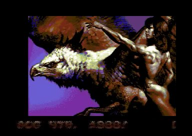
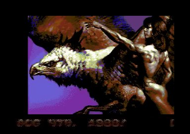
Pour pleinement apprécier une demo, il est nécessaire pour le public d’avoir une connaissance des limitations techniques ainsi que des capacités intrinsèques de l’ordinateur concerné. Cette compréhension permet non seulement d’évaluer l’exploit technique réalisé par les demomakers, mais également d’appréhender la subtilité et l’ingéniosité de leur création.
Les personnes non familières avec les contraintes techniques peuvent ne pas être impressionnées par des réalisations en apparence simples, comme un cube en rotation. Toutefois, il est important de souligner que des fonctionnalités aussi basiques peuvent représenter des prouesses considérables sur une plateforme donnée, surpassant souvent les attentes initiales des concepteurs du système.
Pour qu’une demo soit véritablement mémorable et appréciée, elle doit être ancrée dans un concept artistique solide. Cette combinaison d’excellence technique et de créativité conceptuelle est ce qui distingue les demos les plus marquantes.
La collaboration est au cœur de la demoscene moderne. Les demomakers travaillent souvent en équipe, combinant leurs talents et leurs compétences. Cette collaboration permet non seulement de partager des connaissances et des idées, mais aussi de repousser les limites de ce qui est techniquement et artistiquement possible.
La communauté demoscene reste un élément essentiel de cette culture. Les festivals de demos, les compétitions et les rencontres entre demomakers continuent d’être des moments forts de la vie de la demoscene, permettant aux artistes de partager leurs œuvres, d’échanger des feedbacks et de célébrer ensemble leur passion commune.
Les demos sont généralement le fruit du travail d’une équipe, avec un membre dédié aux graphismes, un autre à la musique, et plusieurs autres à la programmation, suivant ainsi un schéma similaire à celui de la création de jeux vidéo ou de la réalisation de films.
Pour ces créateurs, la véritable récompense réside dans la reconnaissance et l’appréciation de leurs pairs au sein de la communauté demo. Bien que leurs œuvres puissent atteindre un niveau d’excellence reconnu à l’échelle internationale, l’aspiration principale de ces artistes n’est pas tant d’atteindre un public étendu ou de rechercher la célébrité, mais plutôt de créer des œuvres qui résonnent profondément avec ceux qui comprennent et apprécient véritablement la culture unique de la demoscene. C’est cette connexion spéciale avec une communauté dédiée qui donne une signification et une valeur inestimables à leur travail.
 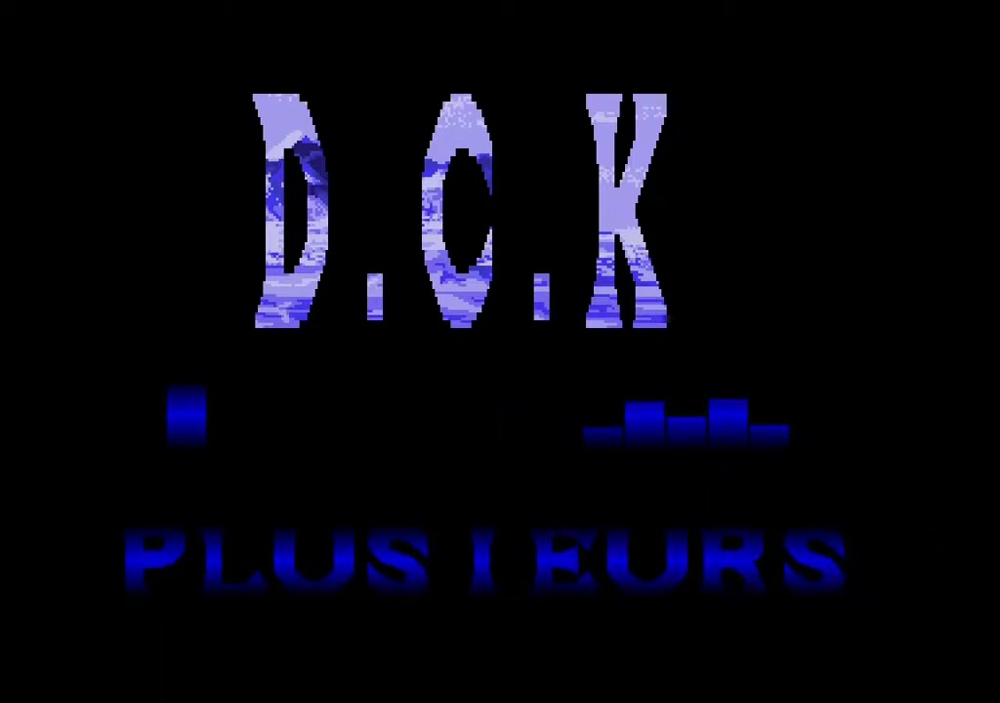
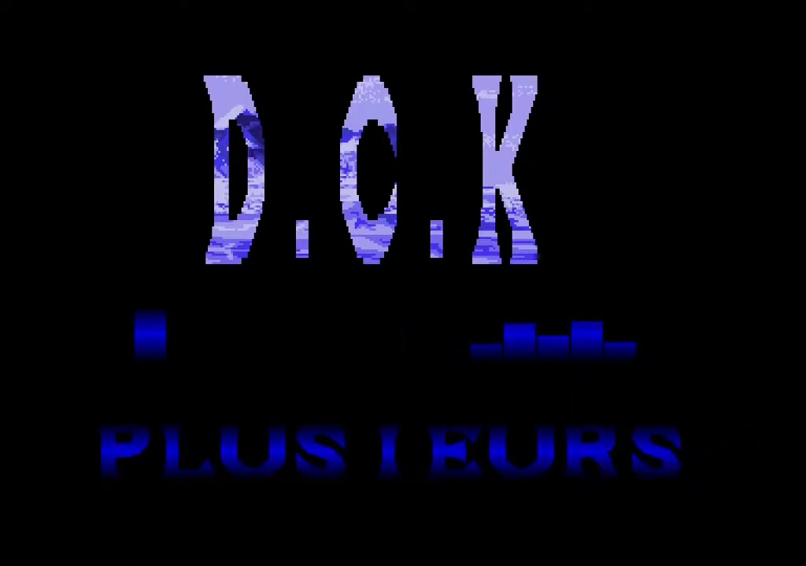
Après avoir exploré les racines profondes de la demoscene, nous nous tournons désormais vers une discipline plus contemporaine : le livecoding20. Mon mémoire se veut centré sur la pratique du livecoding, avec une attention particulière portée à la programmation en direct de fragment shaders. Pour une introduction rapide, un shader est un programme destiné à être exécuté sur le GPU, déterminant la manière dont une image est affichée à l’écran. Des détails plus approfondis seront abordés dans un chapitre ultérieur.
L’épicentre de cette pratique est le shader showdown, une compétition phare dans le cadre des demoparties. Durant ces événements, les programmeurs de shaders s’affrontent sur scène, accompagnés de DJs, pour coder en temps réel devant un public nombreux. Cette compétition emblématique a vu le jour lors de la WeCan en 2013, une demoparty polonaise. Depuis, de nombreuses demoparties ont intégré le shader showdown à leur programmation. Notamment, la Revision21 se distingue comme la plus grande demoparty au niveau mondial.
Un shader showdown, c’est un tournoi où les participants ont 25 minutes pour coder from scratch un shader, et tout cela en direct. Le code et sa représentation visuelle s’affichent sur des écrans géants pendant qu’un DJ s’occupe de la musique. Le public vote à la fin pour son shader préféré. Le thème peut-être imposé pour rajouter de la complexité, mais parfois les participants sont complètement libres de leurs créations.
Une participation à un shader showdown demande des connaissances et de l’entraînement. De la même manière qu’un peintre doit connaître des techniques, maîtriser ses couleurs, les propriétés des différents types de peinture qu’il emploie, et surtout s’entraîner pour devenir un maître de la peinture à l’huile, il faut de l’entraînement et creuser l’aspect technique, mathématique, pour progresser en shader coding et faire cela en live devant un public, que ce soit dans le cadre d’un showdown ou d’un VJing22.
La compétition ressemble à la création d’une démo 4k en direct sur scène, accompagnée d’une bande son mixée par un DJ. Il est étonnant de constater qu’un effet visuellement frappant peut être obtenu avec seulement 5 lignes de code dans un shader, et c’est sans doute cette possibilité qui a été perçue par les demosceners lors de la mise en place du premier showdown.
Cette pratique est extrêmement exigeante, nécessitant une solide mémoire, des compétences techniques avancées, une capacité à gérer la pression, et surtout, une créativité spontanée. La communauté des demosceners reconnaît et valorise ces compétences, en témoigne leur engouement pour cette compétition.
Les participants nourrissent une véritable passion pour l’expérience scénique, captant le rythme de la musique dans une ambiance électrisante. Une appréhension naturelle précède toujours leur montée sur scène. Néanmoins, une fois les premières marches menant vers la scène franchies, ils ressentent un apaisement, percevant la phase la plus stressante comme étant derrière eux. Ils peuvent alors pleinement profiter de cet instant, se montrer tels qu’ils sont sur scène et capter l’adhésion du public, que ce soit pour leur art ou leur personnalité, s’immergeant ainsi totalement dans le présent.
En règle générale, les livecoders s’entraînent intensivement chez eux sur leurs shaders, les mémorisant parfois, tout en incorporant des éléments flexibles pour un environnement de base adaptable. Cette méthode leur permet d’improviser lors des compétitions, ajoutant ainsi une dimension imprévisible à la fois pour eux et pour le public.
L’apprentissage du livecoding s’appuie principalement sur la transmission orale et le partage de connaissances au sein de la communauté open source. Des personnalités comme Inigo Quilez23 ainsi que des collectifs artistiques comme le Cookie Collective jouent un rôle prépondérant en partageant généreusement leurs connaissances. Cette culture de partage et de collaboration en open source au sein de la communauté d’art numérique en temps réel est essentielle pour favoriser son expansion et toucher un public plus large.
En général, ce n’est pas tant la demoscene en elle-même qui constitue le moyen d’expression privilégié des livecoders, mais plutôt le shader coding. C’est au sein de la demoscene qu’ils ont été initiés à cette discipline et qu’ils en ont découvert l’existence. Au sein du livecoding, deux aspects distincts retiennent l’attention des demosceners.
Premièrement, l’exploration du code bas niveau pour en comprendre les nuances. Cette démarche renforce leur expertise technique, à la fois dans la conception artistique et dans leurs activités professionnelles. Deuxièmement, la programmation sur des plateformes anciennes leur offre l’opportunité de renouer avec des objets de leur enfance, tout en adoptant une perspective adulte. La demoscene modifie leur perception de leurs compétences, les incitant à voir chaque machine comme une aire de jeu potentielle.
Au sein même de la discipline de livecoding, une pratique spécifique se démarque : le code golfing24. L’objectif est de concevoir un shader en utilisant le moins de caractères possible, avec le défi supplémentaire de le rendre compatible avec la limite de caractères d’un tweet.
Le terme golfing est inspiré de la quête d’efficacité et de concision, similaire à l’objectif d’un golfeur de terminer un parcours avec le moins de coups. Dans le domaine des shaders, cela se traduit par la création d’un fragment shader, qui atteint une qualité visuelle avec le minimum de caractères de code. Cette pratique sollicite la concision, la créativité et la maîtrise du langage de programmation du développeur.
Dans le vaste éventail d’outils disponibles pour l’exploration et le développement des shaders, quatre plateformes se distinguent particulièrement : Shadertoy, Bonzomatic, KodeLife et ShaderEditor.
Le site le plus populaire dédié à la création de shaders est Shadertoy, créé par Inigo Quilez. Il permet de créer des shaders en ligne, et son aspect communautaire donne la possibilité de consulter le code d’autres utilisateurs, et donc d’apprendre de nouvelles façons de coder (voir 2.5). Shadertoy s’appuie sur l’API WebGL pour effectuer un rendu graphique dans le navigateur à l’aide du GPU. Dans Shadertoy, on ne peut écrire que dans le fragment shader, le vertex shader ne nous est pas accessible. On démarre avec un plane qui représente la surface de l’écran comme seule géométrie de départ. Ainsi si l’on veut représenter des scènes 3D, on doit s’appuyer sur l’algorithme de ray marching et les SDFs pour représenter les formes. À noter qu’un simple copier-coller ne suffira pas si l’on veut exporter notre shader vers un logiciel tiers (Unreal, TouchDesigner, Blender...). En effet il existe différents langages de shaders (GLSL, HLSL, Cg, Metal...), qui malgré leurs grandes similarités syntaxiques diffèrent sur quelques détails. Dès que l’on a saisi les subtilités de chaque langage, il devient très facile de traduire ces codes « à la main ». En général il s’agira de traduire les types, de rajouter des points (« ») aux flottants etc. Shadertoy reste donc un excellent moyen pour prototyper des shaders en vue de les utiliser dans d’autres logiciels ensuite, mais surtout il permet de partager ses créations avec une communauté qui n’hésite pas à laisser des commentaires pertinents pour corriger notre code.

Bonzomatic se distingue comme un logiciel open source accessible sur GitHub. Conçu principalement par Gargaj, il se caractérise par une approche qui privilégie le développement hors ligne tout en offrant une flexibilité remarquable. Sa philosophie open source favorise l’implication de la communauté dans son développement, ce qui lui confère une dynamique constante et une capacité d’évolution continue.

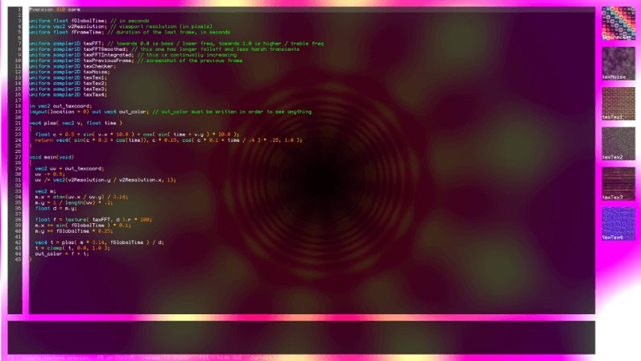
Sa particularité réside dans ses règles strictes appliquées lors des compétitions. En effet, Bonzomatic impose des contraintes spécifiques, telles que l’interdiction d’accéder à Internet et l’impossibilité d’importer des textures. Ces limitations visent à mettre les compétiteurs sur un pied d’égalité, en les incitant à exploiter au maximum leurs compétences et leur créativité sans recourir à des ressources externes.
KodeLife s’impose comme l’outil idéal lorsqu’il s’agit d’intégrer des contrôleurs pour des performances live ou des événements interactifs. Sa fonctionnalité permettant de gérer les entrées en temps réel facilite la liaison entre le shader et les dispositifs de contrôle. Cette capacité dynamique ouvre la porte à une créativité accrue, permettant aux développeurs de concevoir des expériences immersives et interactives de manière plus intuitive. Sa facilité d’utilisation pour l’intégration du MIDI en a fait un choix privilégié pour mes expérimentations (voir 2.7).
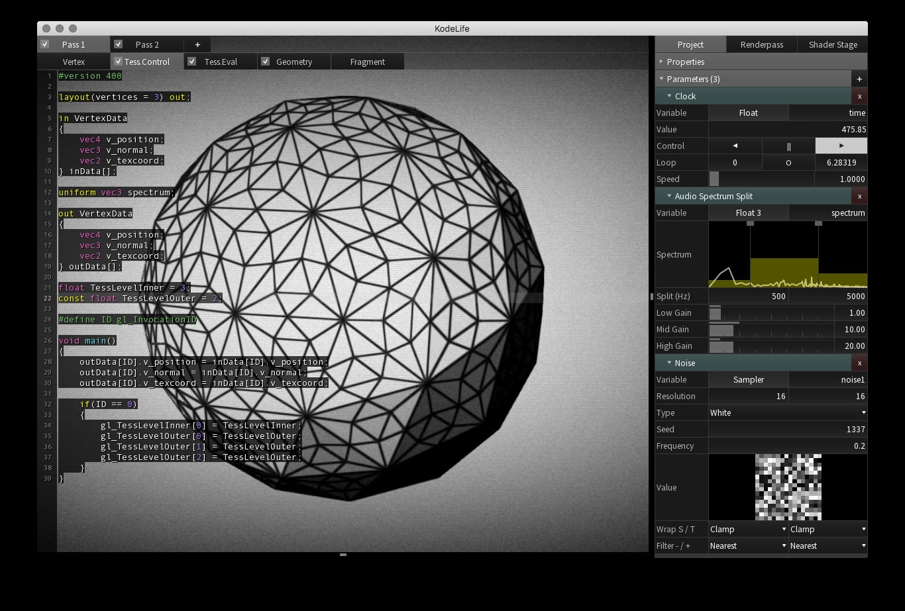

Enfin, pour les moments où l’inspiration surgit en déplacement, comme lors d’un voyage en train, ShaderEditor sur tablette Android devient un allié précieux. Cette application permet de coder des shaders de manière intuitive et efficace sur des appareils mobiles, offrant ainsi une flexibilité qui s’adapte au mode de vie nomade de nombreux développeurs et artistes. Sa capacité à coder efficacement des shaders sur le pouce permet de capturer rapidement les idées créatives, quel que soit l’endroit ou le moment où l’inspiration surgit (voir 2.8).

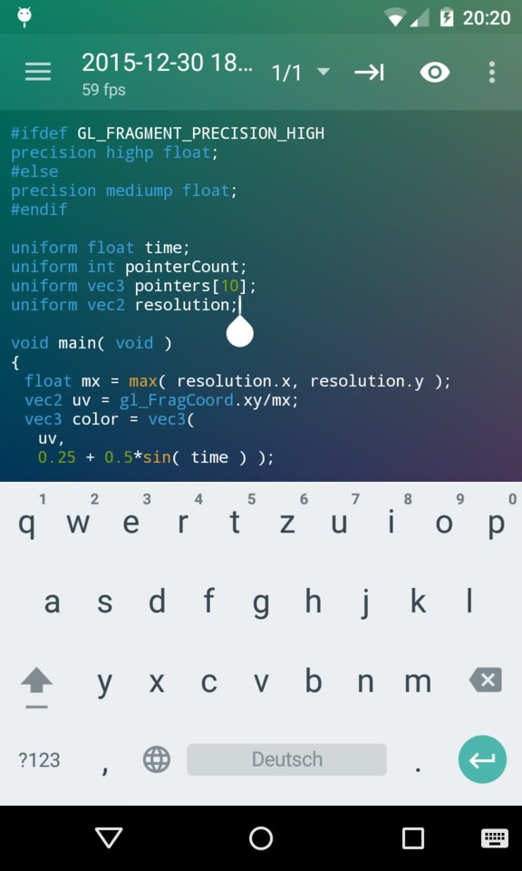
Je souhaitais également explorer une catégorie d’outils indispensable : les outils de visualisation graphique des fonctions mathématiques. Dans le cadre du développement de shaders, ces sites sont essentiels pour expérimenter avec des équations et des fonctions mathématiques, en vue de créer des effets visuels complexes. En effet, lors de la conception d’un shader, le développeur est constamment engagé dans le processus de « mappage » de valeurs d’un intervalle vers un autre, et dans l’affinement de l’évolution de ces valeurs. Des plateformes telles que Desmos et Graphtoy offrent également une meilleure compréhension des transformations géométriques comme les translations, les rotations et les mises à l’échelle (voir [desmos00] et 2.9).
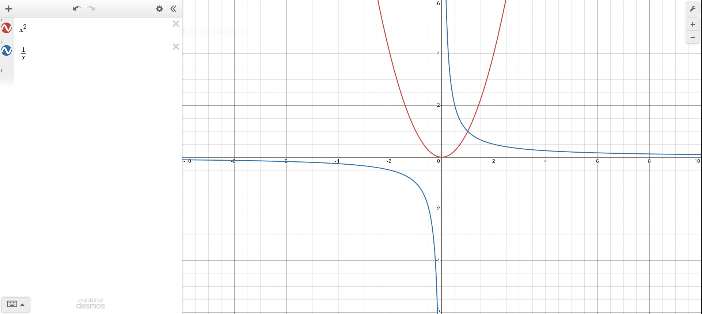

Un strip désigne généralement une bande d’images ou de vignettes disposées dans un ordre séquentiel, souvent utilisée dans le contexte des bandes dessinées.↩︎
Le patrimoine culturel immatériel, selon l’UNESCO, se réfère aux pratiques, représentations, expressions, connaissances et savoir-faire - ainsi que les instruments, objets, artefacts et espaces culturels associés - que les communautés, les groupes et, dans certains cas, les individus reconnaissent comme faisant partie de leur patrimoine culturel.↩︎
La RAM (Random Access Memory) est une forme de mémoire volatile utilisée par les ordinateurs pour stocker des données temporaires qui peuvent être rapidement lues et écrites par le processeur et d’autres périphériques.↩︎
Le terme cracker désigne une personne spécialisée dans la suppression ou la contournement des protections de logiciels, principalement pour les jeux vidéo ou les applications.↩︎
Un cracktro est une courte animation ou introduction visuelle qui apparaît avant le lancement d’un jeu vidéo ou d’un logiciel piraté.↩︎
NTSC (National Television System Committee) est un système de codage couleur utilisé dans les émissions de télévision et de vidéo analogiques en Amérique du Nord, au Japon et dans certaines autres régions.↩︎
PAL (Phase Alternating Line) est un système de codage couleur utilisé dans les émissions de télévision et de vidéo analogiques dans de nombreuses régions, notamment en Europe, en Australie, en Chine et en Afrique.↩︎
Les swappers échangent généralement des demos, des intros, des musiques, des graphiques et d’autres types de productions créatives via des supports physiques comme des disquettes ou des cassettes, ou encore via des services en ligne lorsque l’Internet est devenu plus accessible.↩︎
Une intro (abréviation de « introduction ») est une petite production demo, souvent de courte durée, conçue pour montrer les compétences et la créativité d’un groupe ou d’un individu. Contrairement aux demos complètes qui peuvent durer plusieurs minutes, les intros sont généralement plus courtes, parfois limitées à quelques dizaines de secondes, et se concentrent sur un effet ou une idée particulière.↩︎
Le terme lamer est généralement utilisé de manière péjorative pour décrire quelqu’un qui prétend avoir des compétences ou des connaissances qu’il ne possède pas réellement.↩︎
L’élite fait référence aux individus ou groupes qui se distinguent par leurs compétences techniques, leur innovation, et leur contribution significative à la culture et à l’art de la demoscene.↩︎
Le leet speak (ou l33t speak) est un langage codé utilisant des substitutions de lettres, des chiffres et des symboles spéciaux pour remplacer les lettres originales, rendant la communication plus cryptique et réservée à ceux qui connaissent ce langage.↩︎
DICE, ou Digital Illusions Creative Entertainment, est un studio de développement de jeux vidéo basé en Suède. Fondé en 1992 par Olof Gustafsson et Markus Nyström, le studio est surtout connu pour ses franchises à succès comme « Battlefield », « Mirror’s Edge » et « Star Wars Battlefront ».↩︎
Remedy Entertainment est un studio finlandais de jeux vidéo connu pour ses jeux narratifs innovants tels que « Max Payne », « Alan Wake », « Quantum Break » et « Control ». Situé à Espoo, il est reconnu pour ses histoires captivantes et sa maîtrise de la narration interactive.↩︎
Un « programme DOS » ne se réfère pas au système d’exploitation MS-DOS que l’on trouve sur les PC, mais plutôt à un type de demo spécifique conçu pour l’Amiga. Ces demos étaient généralement exécutées à partir du Workbench, l’environnement graphique de l’Amiga, plutôt que de démarrer directement depuis un disque bootable.↩︎
Un trackloader désigne une technique de chargement de données utilisée pour produire des demos plus fluides et interactives.↩︎
Les diskmags sont des magazines numériques interactifs destinés à la communauté de la demoscene. Ils sont généralement composés de plusieurs sections, y compris des articles, des critiques, des interviews, des classements, et parfois même des demos ou des intros intégrées.↩︎
Le fonctionnement d’un tracker est basé sur une interface de suivi de partitions, où chaque piste représente un instrument ou un échantillon. Les utilisateurs peuvent placer des notes, définir des effets et ajuster divers paramètres pour chaque piste à l’aide d’un clavier ou d’une interface graphique.↩︎
La persistance rétinienne fait référence à la capacité de l’œil humain à percevoir une image pendant un court laps de temps après que l’image originale ait disparu. Cette caractéristique est exploitée dans la création de demos pour produire des effets visuels fluides et dynamiques, en utilisant des techniques telles que le changement rapide d’images ou la manipulation de la luminosité et des couleurs.↩︎
Le livecoding est une pratique qui consiste à improviser de la musique ou des visuels par l’utilisation d’un langage de programmation.↩︎
La Revision est une demoparty annuelle qui se tient traditionnellement à Pâques depuis 2011, à Saarbrücken, la principale ville de la Sarre, dans le sud-ouest de l’Allemagne.↩︎
Le VJing est une forme d’art visuel en direct qui implique la manipulation et la projection en temps réel d’images visuelles pour accompagner la musique lors de performances en direct, telles que des concerts ou des événements artistiques.↩︎
Inigo Quilez est une figure emblématique du graphisme généré par ordinateur et du livecoding.↩︎
Le code golfing est un défi de programmation visant à réaliser un programme fonctionnel avec un minimum de caractères.↩︎